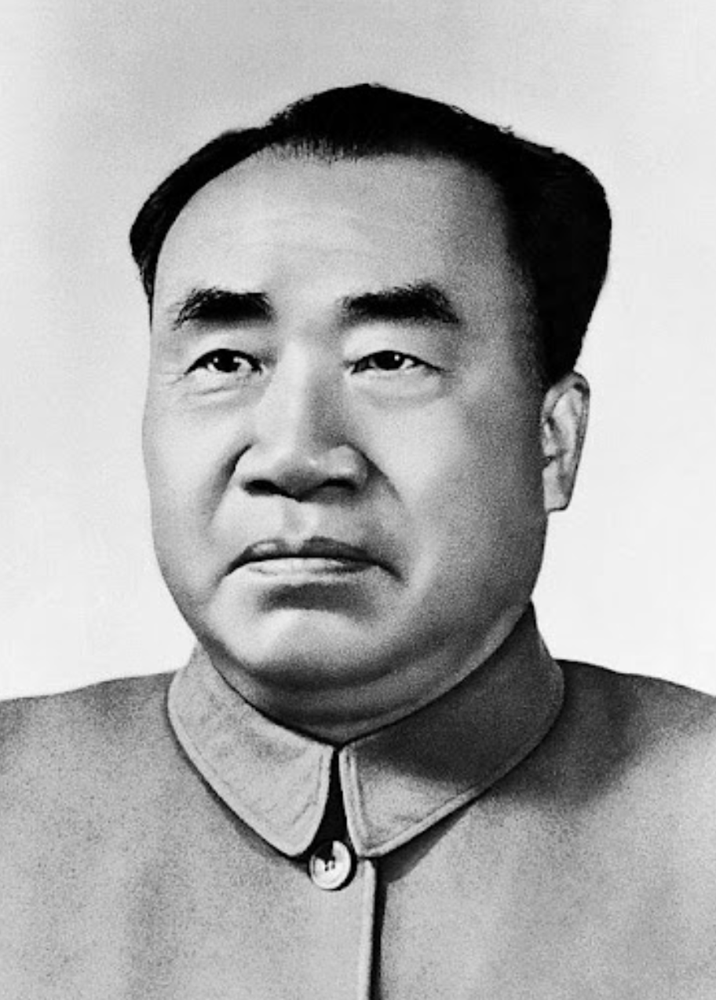

朱德
朱德（1886—1976），江西瑞金人，中国人民解放军主要创始人之一，中国共产党高级领导人。他一生坚定革命理想信念，带领红军艰苦奋斗，致力于中国革命和国家建设，为民族独立和人民解放作出了卓越贡献。
在长期革命实践中，朱德不仅注重军事战略，也关心士兵生活，强调纪律与团结，树立了以人民利益为重的作风。他亲力亲为，生活简朴，为后人树立了忠诚、坚毅和奉献的榜样。
朱德的家风同样注重品德教育。他强调子女勤俭节约、诚实正直、关心集体与社会，注重责任感和社会使命感。他的家风体现了艰苦奋斗、忠诚奉献、以身作则的红色精神。
朱德的精神和家风不仅影响家庭成员，也成为全国学习的典范。在江西及全国，他的事迹常被用于学校教育、党史学习和爱国主义教育中，激励一代又一代人传承红色精神。
← 返回中国地图